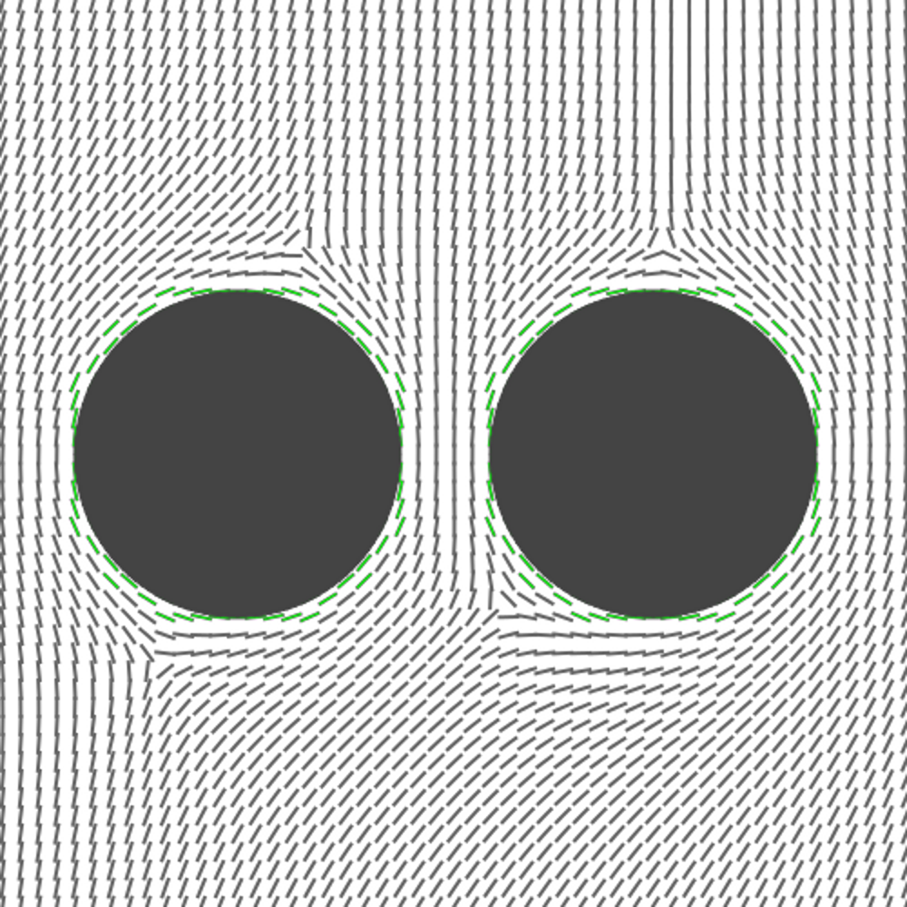

Modelling Forces Between Nanoparticles in a Nematic Liquid Crystal
Tom Fenech
Introduction
- Monte Carlo simulations of nematic liquid crystals
- Supporting experimental work
- Explore continuous parameter space
- Shape
- Size
- Aspect ratio
- Surface anchoring
Motivation
- Technological applications
- High precision displays
- Self-assembled structures
- Two-way process
- Control liquid crystal ↔ manipulate particles
- Forces → behaviour
Liquid Crystals
- A state of matter between solid and liquid
- Properties of both states
- Only exists in certain molecules
- Rod-like molecular structure
- Ordering of molecules
Method
- Static simulations
- Range of separations, orientations
- Calculate energy
- Gradient of energy → force
Continuum Theory
- Not interested in individual molecules
- Just their average orientation
- Coarse-grained approach
- Access to much larger size scales
The Director

- Direction of preferred orientation
- Average alignment of molecules
Frank Equation
- Elastic potential energy between directors
- Sum of three components:
Splay
(∇⋅n)2

+ Twist
(n⋅∇×n)2

+ Bend
(n×∇×n)2
Simulation Setup
- Lattice of directors

The Algorithm
for (t = 0; t < num_its; ++t) {
for (k = 0; k < z_size; ++k) {
for (j = 0; k < y_size; ++j) {
for (i = 0; k < x_size; ++i) {
e_old = calc_energy(i, j, k);
trial_move(i, j, k);
e_new = calc_energy(i, j, k);
if (accept_reject(e_old, e_new))
accept(i, j, k);
}
}
}
}Move Acceptance
- Lower energy → always accepted
- Higher energy → accepted with probability
p = exp(-β(Enew - Eold))
- β: Monte Carlo temperature
(≠ thermodynamic temperature)
Ghost Particles

- Introduced after the system has equilibrated
- A mixing parameter G
- UFrank = G Uno particle + (1 - G) Uparticle
- G is gradually decreased → particle gradually introduced
Simulated Annealing
- Minimisation of free energy
- Monte Carlo temperature is gradually decreased → β gradually increases
- Looking for global minimum
- Maximise alignment
- Minimise defects
- Rate of cooling is critical
- Too fast → defects are annealed into system
- Too slow → simulations take forever!
Defects
- Points where the director is undefined
- High energy regions
- Cause: conflicting boundary conditions
- e.g. Particle surface vs. simulation walls
Parallelisation (MPI)
- 1D domain decomposition
- Two phases
- Each process operates on half of slice
- Inter-process communication
2D Results
- Pairs of circular particles
- Finite box
- Change in energy as a function of separation, orientation
- Gradient in energy → force between particles

Energy Contour Map (Parallel)
- Distance from origin: separation
- Polar angle: orientation


Energy Contour Map (Perpendicular)
Summary (MPI)
- Method can be parallelised
- Still takes a long time
- Limit to size of system
- Would like to look at much larger simulations
OpenCL™
- Based on C99
- C++ bindings
- General purpose computation
- Variety of platforms
- Including (but not limited to) GPUs
Performance Comparison
| CPU | GPU | Simulation Size | Time (hours) |
|---|---|---|---|
| 8×Xeon E5462 @ 2.8Ghz | N/A | 643 = 262144 | 50 |
| 1×Xeon X5650 @ 2.67Ghz | 1 x NVIDIA M2090 | 803 = 512000 | 32 |
Performance Per Cell
- 3× speedup
- Possible to run 8 of these jobs per node
- >3× speedup after tuning
- >10× compared to MPI on 8 CPUs
3D Results
- Preferred orientation to field of a cylindrical particle
- Homeotropic and homogeneous surface anchoring
- Range of aspect ratios
Single Homeotropic Particle
- Higher aspect ratio rods and discs show greater variation in energy
Single Homogeneous Particle
- Long rods → parallel
- Flat discs → perpendicular
Current Work

- Pairs of particles
- Aspect Ratios 1/5, 1/2, 2, 5
- Energy variation with separation and rotation
Pairs of Rods
- Aspect Ratio 5
- Length 100nm, Radius 10nm
- Homeotropic surface anchoring
- Long axis perpendicular to bulk director


Future Work: Larger Simulations
- Simulations containing many particles
- Aggregation of colloidal particles
- Observed experimentally
- Not entirely understood
- Visualisation
- Large volume of data
- Highlight areas containing defects?
Conclusions
- OpenCL method 10× faster than MPI
- Larger systems can be modelled
- Wide range of particles
- Shape, size, aspect ratio, surface alignment
- Wide range of geometries
- Separation, orientation
Thanks To
- Supervisors
- Dr. Simon Hanna
- Prof. Rob Richardson
- GPU specialists
- Simon McIntosh-Smith (Bristol)
- Prof. Mike Giles (Oxford)
- EPSRC
- Nanophysics and Soft Matter Group
and thanks for listening.
OpenCL and the OpenCL logo are trademarks of Apple Inc. used by permission by Khronos.